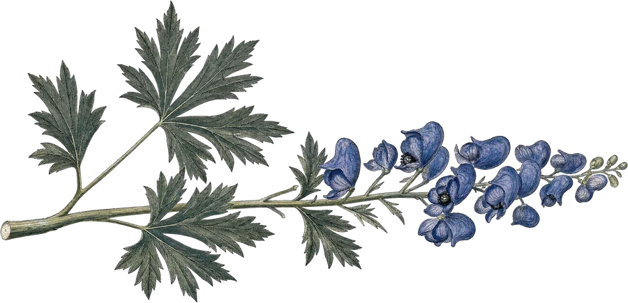

Garden design
A succession of flowering worked out for your ground, your light, and your winter — alpine miniatures through to background giants.

The other half of the tradeFull-service design, installation and maintenance for commercial and residential properties — from a single border to clearing and replanting a whole site.
A succession of flowering worked out for your ground, your light, and your winter — alpine miniatures through to background giants.
Field-grown or potted stock, planted by the people who raised it. Cottage-style or formal, whichever argument you found more persuasive.
Ongoing care through the season, so the border in year three looks like the drawing from year one.
Brambles, weed trees, and old foundations. Kate has coaxed gardens out of worse — ask about the barn foundation full of broken glass.
Walls, steps and edges built to sit right in a Vermont landscape and survive the frost heave.
Planting, pruning, and removals — including the specimens that are not supposed to do well up here.
Water in the landscape, and the moisture-lovers that belong at its edge.
If it belongs in a Northeast Kingdom garden, it is worth a telephone call.
“When I first saw the much neglected garden at the old farmhouse, my first thought was what can be saved. Kate Butler changed all that. Not immediately but over several years, coaxing us and the land.”Marian Burros